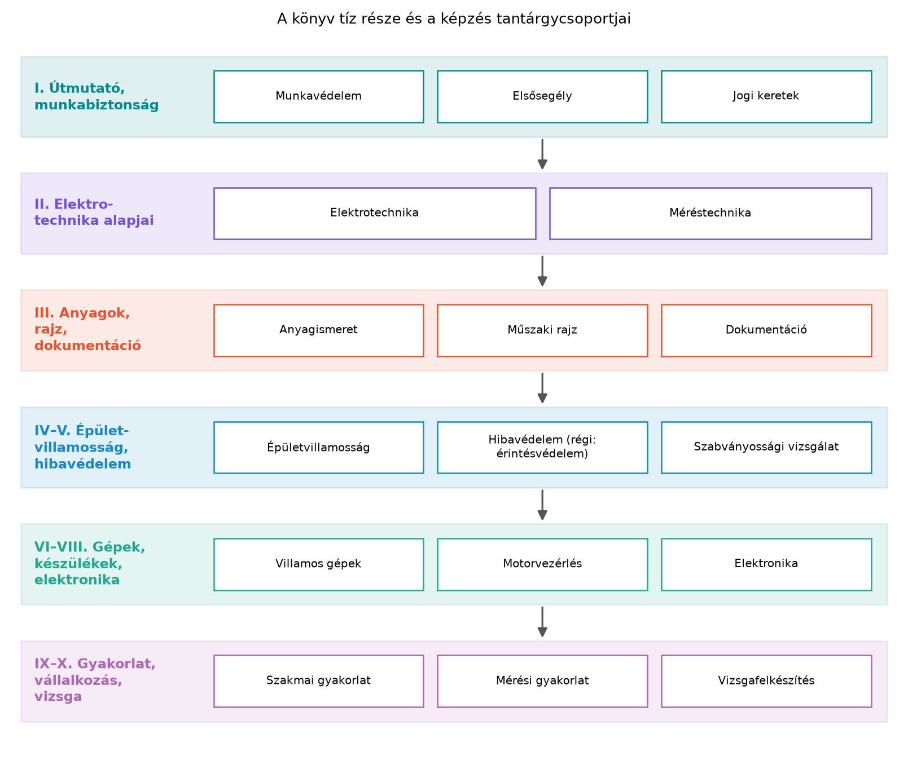
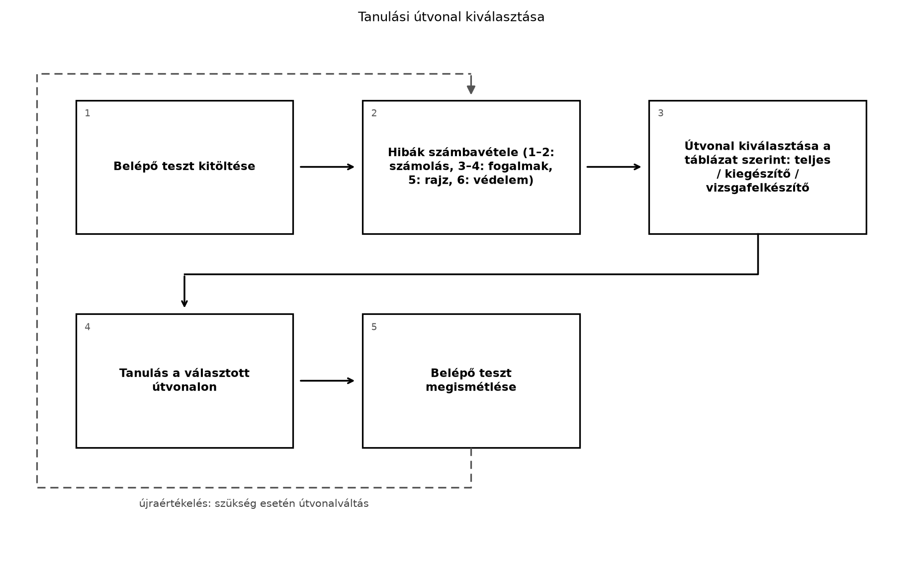
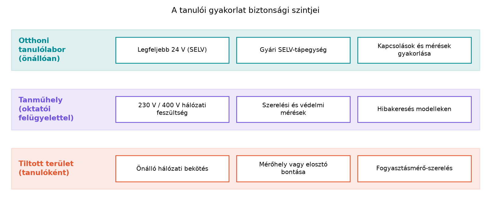

Képzeld el, hogy megérkezel egy épülő társasházba. A művezető kezedbe ad egy villamos kivitelezési tervet, és azt mondja, hogy a folyosóról indulva ma kell bekötnöd egy lakáselosztót, három világítási áramkört és a főelosztó mérőhelyi csatlakozását. A terv tele van rajzjelekkel, az elosztó kapcsolási rajzán kismegszakító-, áram-védőkapcsoló- és túlfeszültségvédelmi jelek szerepelnek, a vezetéktípusok pedig harmonizált jelöléssel vannak megadva.
Ahhoz, hogy ez ne egymástól független, összefüggéstelen feladatok halmazának tűnjön, hanem egyetlen szakmai logika mentén végigvihető munkának, pontosan tudnod kell, hogy az egyes ismeretek hová illeszkednek. Ez az alfejezet ezt a térképet adja: megmutatja, mit vár el a szakma, és hogy a könyv egyes részei miként fedik le a képzési követelményeket.
Definíció. A villanyszerelő a kisfeszültségű villamos berendezések szerelésére, javítására, ellenőrzésére és üzembe helyezésére felkészített szakember. A magyar képzési rendszerben a villanyszerelő szakma a 34 522 04 azonosítószámú szakképesítéssel, majd annak jogutódjával szerezhető meg; a pontos, jelenleg hatályos azonosítót és követelményeket a mindenkori képzési jogszabály tartalmazza (ellenőrizendő: aktuális szakképesítési besorolás és elnevezés).
A gyakorlatban a villanyszerelő két nagy területen dolgozik, amelyek a könyv felépítését is meghatározzák:
A villanyszerelő nem tervezi meg szabadon a teljes épületvillamos hálózatot, nem készít engedélyes villamos terveket, nem végez nagyfeszültségű hálózati munkát, és nem jogosult hálózati engedélyesi feladatok ellátására. A tervezést a tervező, a hálózati beavatkozást a hálózati engedélyes végzi; a szerelő a kivitelezés, ellenőrzés, javítás és karbantartás szakembere. Természetesen a villanyszerelőnek ismernie kell a terveket, a szabványokat és a vonatkozó előírásokat, mert ezek nélkül nem tud biztonságos és szabványos munkát végezni.
A villanyszerelő képzés tantárgyait hagyományosan három csoportra osztják:
Az alábbi táblázat a könyv tíz részéhez rendeli hozzá a tipikus tantárgyi tartalmakat, és megmutatja, hogy az adott rész miért fontos a vizsgán és a munkahelyen.
| Könyvfejezet | Tipikus tantárgyi tartalom | Vizsga/gyakorlat jelentősége |
|---|---|---|
| I. rész: Útmutató és munkabiztonság | Munkavédelem, biztonságtechnika, elsősegély, jogi keretek | Biztonsági szabályok ismerete nélkül sem gyakorlat, sem elmélet nem teljesíthető |
| II. rész: Elektrotechnika alapjai | Elektrotechnika, méréstechnika | A számolási feladatok alapja; Ohm-törvény, háromfázisú rendszer, mérések |
| III. rész: Anyagok, műszaki rajz, dokumentáció | Anyagismeret, műszaki rajz, műszaki dokumentáció | Rajzolvasás, vezeték- és kábelismeret, dokumentáció készítése |
| IV. rész: Épületvillamosság | Épületvillamosság, szerelési gyakorlat, világítástechnika | Lakáselosztó, szerelvények, világítási áramkörök, túláramvédelem |
| V. rész: Hibavédelem, földelés, ellenőrzés | Érintés- és hibavédelem, villámvédelem, szabványossági vizsgálat | Védelmi mérések, jegyzőkönyv, FI-, hurokimpedancia-mérés |
| VI. rész: Villamos gépek | Villamos gépek, transzformátorok, motorok | Motorok bekötése, adattábla, indítási módok, hibakeresés |
| VII. rész: Kapcsoló- és vezérlőkészülékek, ipari elosztók | Készülékismeret, motorvezérlés, kapcsolóberendezések | Mágneskapcsolós vezérlések, direkt- és csillag–delta indítás, elosztószekrény |
| VIII. rész: Ipari elektronika | Elektronikai alapok | Érzékelők, tápegységek, félvezetők az ipari környezetben |
| IX. rész: Gyakorlati útmutatók | Szakmai gyakorlat, mérési gyakorlat | Tanműhelyi és vizsgafeladatok lépésről lépésre |
| X. rész: Szakma, vállalkozás, vizsga | Vállalkozási ismeretek, vizsgafelkészítés | Árajánlat, munkajog, szakmai ismeretek rendszerezése |
Ezt a megfeleltetést a továbbiakban kompetenciatérképnek nevezzük. Nem cél, hogy a könyv szövegét betű szerint megtanuld, hanem hogy az egyes fejezeteket a képzés követelményeihez tudd kötni, és a vizsgán megtaláld a választ.
Az alábbi rétegábra ugyanezt a megfeleltetést mutatja egy pillantással: a könyv részei felülről lefelé haladva egymásra épülnek (a munkabiztonság és az elektrotechnikai alapok minden későbbi rész előfeltétele), és rétegenként a hozzájuk tartozó tipikus tantárgyak állnak.

Minden alfejezet az alábbi – szándékosan ismétlődő – szerkezetben épül fel, hogy önálló tanulásnál is kiszámítható legyen az út:
Ezt a szerkezetet nevezzük a könyv tanulási szerződésének: ha egy alfejezetben végigjárod ezt a tizenkét lépést, akkor a képzés adott témáját nemcsak megérted, hanem a vizsgán és a munkahelyen is használható formában sajátítod el.
Szabály. A tanulási szerződés nem azért van, hogy a könyvet egyhangúvá tegye, hanem hogy a tanuló mindig tudja, mi a következő lépés, és a tanulást be tudja illeszteni a napi rutinjába. Ha kevés időd van, az önellenőrzés és a rövid összefoglaló mindig a leggyorsabb visszajelzést adja arról, hogy elég mély-e a tudásod.
A könyvben minden alfejezet azonos kiemeléseket használ, hogy a keresés és a tanulás gyors legyen:
A mennyiségek betűjeleit és a mértékegységeket a könyv a hazai és európai gyakorlatnak megfelelően jelöli. A feszültség jele , az áramé , az ellenállásé , a teljesítményé , a hatásfoké , a frekvenciáé , a fázisszögé , az impedanciáé , a fajlagos ellenállásé . A hálózati feszültség 230/400 V, 50 Hz. A vezetékek jelölése L1, L2, L3, N, PE, a motorok kapcsai U1, V1, W1, a mágneskapcsoló tekercsé A1/A2, a hőkioldó érintkezőié 95/96. A vezető- és kapocsjelölések az MSZ EN 60445, a készülék-betűjelek az MSZ EN IEC 81346-2, a rajzjelek az MSZ EN 60617 szabványt követik (ellenőrizendő: aktuális kiadások).
Továbbvitt eredmény. A kiemelések jelentése és a tanulási szerződés szerkezete minden későbbi alfejezetben alkalmazásra kerül; a szabványok, a rajzjelek és a mértékegység-konvenciók az Elektrotechnika alapjai, az Anyagok, műszaki rajz és dokumentáció és a Hibavédelem, földelés, villámvédelem és ellenőrzés rész alfejezeteiben válnak napi használatúvá.
A könyv önálló tanulásra is készült, de akkor működik a legjobban, ha a tanulási munka aktív. Az alábbi módszert érdemes követni:
Figyelem. A könyv nem helyettesíti a szabványokat, a gyártói adatlapokat vagy a hatályos jogszabályokat. A képzés, a vizsga és a munkahelyi ellenőrzés során mindig a mindenkori szabvány és a gyártó utasítása a mérvadó. Az itt megadott szerelési útmutatók és példák a tanulást segítik, nem pedig kiviteli tervek.
Egy kezdő villanyszerelő tanuló az első gyakorlati órán gyakran úgy érzi, hogy a szabványok, a matematikai képletek és a rajzjelek csak az iskolapadban fontosak. Aztán amikor egy lakáselosztóban meg kell állapítani, hogy a kismegszakító B-os vagy C-os legyen, a FI-relé 30 mA legyen-e, és a védővezető folytatólagos-e, rájön, hogy ezek nélkül nem tud dönteni. Ez a könyv éppen ezt a munkamódszert építi fel: az alfejezetek a valós döntési helyzetből indulnak ki, visszavezetnek a számításhoz és a szabványhoz, majd a gyakorlatban ellenőrzik a megoldást.
A válaszokat a Megoldások szakasz elején, az „Önellenőrzés – válaszok” alcím alatt találod.
1. feladat (A). Sorold fel a könyv tíz részét, és mindegyikhez írj egy olyan tanulási célt, amely a villanyszerelői munkában fontos.
2. feladat (A). Válaszd ki a III. részt a kompetenciatérképből, és indokold meg, miért kapcsolódik a vezetékméretezéshez és a szabványos rajzjelekhez.
3. feladat (B). A fenti alfejezet-szerkezet tizenkét pontja közül melyik hiánya veszélyezteti leginkább a biztonságos gyakorlati munkát? Indokold a választ.
4. feladat (B). Csoportosítsd a következő szakmai feladatokat a megfelelő könyvfejezethez: „egy háromfázisú aszinkron motor csillag–delta indítása”, „lakáselosztó FI-reléjének ellenőrzése”, „egy vezeték méretezése terhelhetőségre és feszültségesésre”, „mágneskapcsolós önfenntartó kapcsolás bekötése”.
5. feladat (C). Tervezz egy rövid heti tanulási tervet egy olyan tanuló számára, aki napi 1,5 órát tud tanulni, és a vizsgáig 6 hét van. A tervben szerepeljen a II. rész néhány alfejezete, a IV. rész lakás-elosztós gyakorlata és a V. rész védelmi méréseket tárgyaló része. Ne felejtsd el beilleszteni az önellenőrzést és a feszültségmentes gyakorlást.
6. feladat (D). Keress egy villamos kapcsolási rajzot egy lakáselosztóhoz (pl. e könyv Lakás- és épületelosztó felépítése alfejezetéből vagy a jegyzetedből). Azonosítsd rajta a kismegszakítót, az áram-védőkapcsolót, a védővezetőt és a nulla vezetőt. Írd le, hogy a valós elosztóban hol találhatók ezek az elemek, és hogyan ellenőriznéd feszültségmentes állapotban a bekötésüket.
A tíz rész és egy-egy tanulási cél:
A III. rész az anyagismeretet, a műszaki rajzot és a dokumentációt öleli fel. A vezetékméretezéshez szükséges a vezetők anyagának, hőmérsékletfüggésének és terhelhetőségének ismerete, amelyet a Vezetékek és kábelek tárgyal. A szabványos rajzjelek ismerete nélkül a kapcsolási rajzokban nem tudjuk azonosítani a védelmi készülékeket, így a dokumentáció olvasása és készítése is hibás lesz. Mindkettő a III. részben található.
A gyakorlati útmutató hiánya veszélyeztetné leginkább a biztonságos munkát. Ez a pont tartalmazza a cél, az eszközök, a biztonsági korlát, az öt biztonsági szabály, a számozott lépések, az ellenőrzési pontok, a tipikus hibák és a dokumentálás leírását. Enélkül a tanuló nem tudná, mikor és milyen sorrendben kell feszültségmentesíteni, és a gyakorlati vizsgán súlyos hibát követne el.
A terv csak egy lehetséges megoldás. Heti 5 tanulási nap, 1,5 óra/nap.
| Hét | Téma (könyvfejezet) | Tanulási cél | Gyakorlat/önellenőrzés |
|---|---|---|---|
| 1. | I. rész: Villamos munkavégzés biztonsága: az öt szabály és a munkaengedély – az öt szabály sorrendje | Lekapcsolás, visszakapcsolás elleni biztosítás, feszültségmentesség ellenőrzése, földelés és rövidre zárás, szomszédos részek lefedése | Feszültségmentesítés lépéseinek eljátszása törpefeszültségű tanlapon, a kétpólusú feszültségvizsgáló előzetes ellenőrzésével (nem fázisceruzával) |
| 1. | II. rész: Alapfogalmak, Ohm-törvény | Feszültség, áram, ellenállás, teljesítmény kiszámítása | Számolási feladatok, mértékegységekkel |
| 2. | II. rész: Váltakozó áram, háromfázisú rendszer | Szinuszos jelek, fázisfeszültség, vonali feszültség | Háromfázisú teljesítményszámítás, fázorábra rajz |
| 3. | IV. rész: Szereléstechnika, világítási áramkörök | Kapcsolók, váltó és kereszt kapcsolás | Törpefeszültségű kapcsolás összeállítása, önellenőrzés; szerelés előtt az öt szabály végrehajtása és dokumentálása |
| 4. | IV–V. rész: Elosztó, hibavédelem, FI-relé | Lakáselosztó felépítése, védelmi elemek | Lakáselosztó rajz elemzése, FI-mérés elmélete |
| 5. | V. rész: Mérések, jegyzőkönyv | Hurokimpedancia, FI-vizsgálat, szigetelési mérés | Mintamérési jegyzőkönyv kitöltése |
| 6. | X. rész: Vizsgafelkészülés | Teljes tananyag rendszerezése | Komplex feladatok, rajz–valóság–mérés hármas alkalmazása |
A feladatban adott rajzon a kismegszakítókat Q1, Q2, … jelöli, az áram-védőkapcsolót a rajzjele (kapcsolójel, amelyhez szaggatott vonallal az differenciaáram-érzékelő doboz kapcsolódik) és a betűjele (pl. Q0 vagy F1, a terv jelölési rendszerétől függően) azonosítja; köznyelvi neve FI-relé. A védővezető zöld-sárga színű, PE jelölésű, a nullavezető világoskék színű, N jelölésű. A valós elosztóban ezek az elemek a DIN-sínre vannak pattintva, a védővezetőket a zöld-sárga készüléksorkapocshoz, a nullavezetőket a kék sínhez kell csatlakoztatni, a fázisvezetőket pedig a kismegszakító kimeneteire. Biztonsági korlát. Valós elosztót tanulóként csak oktató felügyeletével nyiss meg. Előbb az öt biztonsági szabály szerint feszültségmentesíts (lekapcsolás, visszakapcsolás elleni biztosítás, a feszültségmentesség ellenőrzése bevizsgált kétpólusú feszültségvizsgálóval minden vezetőpár között – nem fázisceruzával –, földelés és rövidre zárás, a szomszédos feszültség alatti részek lefedése), csak utána vizsgáld a bekötést; lásd Villamos munkavégzés biztonsága: az öt szabály és a munkaengedély. Feszültségmentes állapotban ellenőriznéd a védővezetők folytonosságát, a kapcsok meghúzását, a feliratok meglétét és a rajzzal való egyezést.
A villanyszerelő két nagy munkaterülete az épületvillamosság és a villamos készülék- és berendezésszerelés. A könyv tíz része lefedi a képzés tantárgyait: az alapoktól a munkavédelmen, az elektrotechnikán, az anyagismereten, a rajzolvasáson és dokumentáción, az épületvillamosságon, a hibavédelmen és ellenőrzésen, a villamos gépeken, a kapcsoló- és vezérlőberendezéseken, az ipari elektronikán, a gyakorlati útmutatókon át a vizsgafelkészülésig. Minden alfejezet azonos szerkezetet követ: motiváció, szemléletes kép, definíciók és szabályok, kidolgozott példák, szabvány, valós alkalmazás, gyakorlati útmutató, tipikus hibák, önellenőrzés, feladatok, rövid összefoglaló. A kiemelt elemek – Definíció., Szabály., Szabvány., Figyelem., Tilos., Gyakorlat., Biztonsági korlát., Továbbvitt eredmény. – minden alfejezetben azonos jelentésűek. A könyv a magyar 230/400 V-os, 50 Hz-es hálózat, az MSZ EN és MSZ HD szabványok, valamint a hazai jelölésrendszer szerint tanít. A szerelési munkát feszültségmentes állapotban végezzük; a feszültség alatt végzendő méréseket (hurokimpedancia, FI-vizsgálat) csak arra jogosult, képesített személy végezheti, az MSZ EN 61557 szerinti mérőműszerrel – tanuló csak oktató felügyelete mellett, tanműhelyi körülmények között; a könyvben megadott határértékek és előírások tanulási példák, a tervezéshez a hatályos szabvány és a gyártói adatlap a mérvadó.
Az alfejezet a szakképesítés megnevezésénél és azonosítójánál a mindenkori képzési jogszabályt jelöli, de a pontos, hatályos besorolást a kiadás előtt célzottan ellenőrizni kell (ellenőrizendő: aktuális szakképesítési besorolás és elnevezés). A könyvben használt szabványhivatkozások az MSZ HD 60364 sorozatra, az MSZ EN 60617 rajzjelekre, az MSZ EN 60898-1 kismegszakítókra, az MSZ EN 61557 védelmi mérőműszerekre és a kapcsolódó MSZ EN szabványokra utalnak; a pontos kiadási évszám és a hatályos változat nem hivatkozható ellenőrzés nélkül. A hálózati csatlakozási és munkavédelmi előírások a hálózati engedélyes és a hatályos jogszabályok szerint változhatnak, ezért a konkrét jogszabályszámokat és határidőket a kiadás előtt ellenőrizni kell.
Amikor egy villanyszerelő tanuló elkezdi ezt a könyvet, gyakran ugyanaz a kérdés fogalmazódik meg benne: „Melyik fejezettel kezdjem, és mennyi időt szánjak egy témára?” Az előző, A könyv használata és a képzési követelmények térképe alfejezet már megmutatta a képzési követelmények térképét; most azt a gyakorlati kérdést válaszoljuk meg, hogyan kell ezen a térképen önállóan elindulni. A tanulási útvonal nem kényelmi kérdés, hanem hibakeresés a saját tudásodban: ha rossz helyen kezded, az elvesztegetett idő mellett az is előfordul, hogy hiányos alapismeretekre építesz, és a későbbi szerelési, mérési vagy hibavédelmi részeket nem érted meg igazán. Ezért ebben az alfejezetben egy belépő önellenőrző tesztet, három tanulási útvonalat, a vizsga szerkezetének áttekintését és a heti ütemezés módszerét kapod. Az így kialakított tanulási rend a teljes könyvön végigkísér, különösen a szakmai jegyzetfüzet vezetésével, amelyet a későbbi gyakorlati útmutatók és a vizsgafelkészítő fejezetek fognak használni.
A belépő teszt nem vizsga, és nem befolyásolja a képzési eredményt. Célja, hogy megmutassa, mely részeket kell teljes mélységben elvégezned, hol elég ismételni, és hol léphetsz gyorsabban. A tesztet önállóan, lehetőleg megoldások nélkül töltsd ki, majd a válaszok alapján sorold be magad. A kérdések három csoportra épülnek: egyszerű számolás, mértékegység-átváltás, és a villanyszerelői alapfogalmak értelmezése.
Példa. Töltsd ki ezt a rövid mintasort:
Ha az 1. és 2. feladat hibátlan, akkor a matematikai és mértékegység-alapod rendben van, és a II. részben gyorsíthatsz. Ha a 3–4. kérdésekre is magabiztos választ adsz, akkor valószínűleg van valamilyen gyakorlati előismereted. A 6. kérdés hibája pedig arra utal, hogy a Túláramvédelem fejezetet semmiképp ne hagyd ki. Az alábbi táblázat a pontozás helyett az útvonalválasztást segíti.
| Eredmény | Javasolt útvonal |
|---|---|
| Az 1–4. kérdésekben sok hiba, a kapcsolási rajzot nem tudod felvázolni | Teljes útvonal |
| A számolás megy, de a fogalmakban bizonytalanság van; vagy a gyakorlatod van, de az elmélet hiányos | Kiegészítő útvonal |
| A mintasor és a saját képzési jegyzeteid alapján csak ismétlésre van szükséged | Vizsgafelkészítő útvonal |
A belépő tesztet érdemes a könyv elolvasása után megismételni; így magad is látod a fejlődést.
A könyv a vizsgakövetelményeket teljes mélységben fedi le, azonban nem mindenkinek ésszerű ugyanabban a sorrendben haladni. Az alábbi három útvonal közös célja ugyanaz: eljutni odáig, hogy a villanyszerelői és a villamos berendezés- és készülékszerelői ismereteket alkalmazni tudd. A különbség csak a sorrendben és az ismétlésben van.
Ez az útvonal azoknak készült, akiknek nincs villamos előismerete, vagy akik úgy érzik, hogy a korábbi tanulmányaikból mindent elfelejtettek. A sorrend szorosan követi a könyv részeit: először az Olvasói útmutató és a Munkavédelem és jogi keret fejezeteket dolgozod fel, mert ezek biztonsági keretet adnak. Ezután következik az Elektrotechnika alapjai teljes, figyelmes feldolgozása, mert enélkül nem lehet sem a vezetékméretezést, sem a hibavédelmet, sem a villamos gépeket megérteni. Fontos, hogy itt ne ugord át a számolási példákat: a villanyszerelői munkában nem elég tudni, hogy az ellenállás nő, ha a vezeték hosszabb; ki is kell tudni számolni a feszültségesést.
A teljes útvonalon a III. rész anyagismereti és rajzdokumentációs fejezetei párhuzamosan is feldolgozhatók a IV. rész épületvillamossági részeivel, mert sok rajzjelet konkrét szerelési rajzokon értesz meg igazán. A VI–VII. részt (gépek, vezérlések) csak akkor kezdd el, ha az épületvillamossági hibavédelem fejezeteit már elvégezted, mert a motorvédelem és a kapcsolóberendezések erre épülnek.
Ez az útvonal annak való, akinek a számolási alapjai rendben vannak, de a fogalmakban vagy a szakmai részletekben hiányos; ha tanfolyamra jársz, az órák üteméhez is igazíthatod. Ha tanfolyamra jársz, vagy munka mellett tanulsz, az órák üteme nem mindig egyezik a könyv fejezetsorrendjével. Ilyenkor célszerű a könyvet kiegészítő forrásként használni: az óra után keresd meg ugyanazt a témát a könyvben, és a fejezet saját kidolgozott példáival mélyítsd el a tanultakat. Ezen az útvonalon az a legfontosabb, hogy a hiányzó láncszemeket azonnal pótold. Például ha az oktató a hurokimpedancia-mérésről beszél, de neked bizonytalan az Ohm-törvény vagy az impedancia fogalma, ne halogass: menj vissza az Impedancia, soros és párhuzamos RLC, rezonancia alfejezethez, és oldd meg az ottani feladatokat.
A kiegészítő útvonalban a saját jegyzetfüzet még fontosabb, mint a teljesben: ide kerülnek azok a hiányosságok, amelyeket az órák során észleltél, és a későbbi ismétlés ebből indul.
Ez az útvonal azoknak való, akik már elvégezték a témaköröket, de a vizsgához szeretnének célirányosan ismételni. A vizsgafelkészítő útvonalon a könyv részeit nem sorban, hanem feladattípusok szerint érdemes újra bejárni. Első lépésként a Vizsgatérkép és számolási képletgyűjtemény alfejezetet kell használni, hogy listát készíts a vizsgán elvárt képletekről. Ezután az Elméleti mintafeladatsor megoldásokkal és a Gyakorlati vizsgafeladatok és hibakeresés, értékelési szempontok alfejezetekben gyakorolj. Ha egy feladatnál elakadsz, ne magát a feladatot nézd meg azonnal, hanem kérdezd meg: melyik alfejezet tanította ezt a témát? Ez a hivatkozás segít a könyv megfelelő részéhez ugrani, és ott újra elvégezni a hiányzó önellenőrzést.
A magyarországi villanyszerelői szakmai vizsga szerkezete a mindenkori képzési és vizsgakövetelményektől függ, ezért a konkrét feladattípusok, időtartamok és súlyozások ellenőrizendők: aktuális képzési és vizsgakövetelmények. Az általános kép azonban stabil: a vizsgán elméleti tudást, számolási készséget, rajzolvasást, gyakorlati szerelést és hibakeresést kérnek számon. Az alábbiakban ezt a jellemző szerkezetet mutatjuk be – nem előírásként, hanem tanulási térképként.
A tanulás során mindig tudd, melyik vizsgarészt gyakorlod éppen. Ha például egy kapcsolási rajzot nézel, az egyben a rajzolvasás és a gyakorlati bekötés előkészítése is, de ha nem tudod a jelölések értelmét, akkor a rajzolvasási vizsgarészhez kell visszamenned.
Az alábbi folyamatábra azt mutatja, hogyan válassz tanulási útvonalat a belépő teszt eredménye alapján. A három útvonal nem egymás utáni lépés, hanem alternatíva: a harmadik lépésben a fenti táblázat alapján egyet választasz közülük.

A folyamatábra lépései: először mindig a belépő tesztet töltöd ki; utána a hibák számát és típusát nézed; ebből a táblázat alapján választod ki a három útvonal közül azt az egyet, amelyen haladsz, végül a teszt megismétlésével ellenőrzöd a fejlődést. A diagram nem dönt helyetted, de rákényszerít arra, hogy ne ugorj át egy egész témakört pusztán azért, mert sürget a vizsga.
A könyv minden alfejezete hasonló szerkezetben épül fel: a fogalmak után kidolgozott példák, majd Önellenőrzés, Feladatok, Megoldások és Rövid összefoglaló következik. Ez a sorrend nem véletlen. Az önellenőrzés arra való, hogy azonnal visszajelzést adjon: megértetted-e a legfontosabb fogalmakat, vagy csak átfutottad a szöveget? A feladatok mélyítik el a tudást, és gyakran olyan helyzetbe hoznak, mint a vizsga. A rövid összefoglaló pedig a továbbvitt eredményeket rögzíti, amelyekre a későbbi alfejezetek építenek.
Az önellenőrzést mindig indoklással végezd el. Ha egy igaz/hamis kérdést rosszul válaszoltál meg, ne csak annyit írj a jegyzetedbe, hogy „hamis”, hanem azt is, hogy miért hamis, és mi a helyes állítás. A feladatoknál a szintjelölések segítenek: az (A) feladatok az alapokat, a (B) feladatok a több lépést, a (C) feladatok a gondolkodást, a (D) feladatok a gyakorlati alkalmazást igénylik. Ha egy (B) feladatot elsőre nem tudsz megoldani, menj vissza az alfejezet törzsanyagához, mielőtt a megoldást megnéznéd.
A rövid összefoglalót ne csak elolvasd, hanem hasonlítsd össze a saját jegyzeteddel. Ez a háromszögelés – olvasás, feladat, összehasonlítás – a legrövidebb út a tartós tudáshoz.
A legfontosabb, az egész könyvön végigvonuló eszköz a szakmai jegyzetfüzet. Ez nem a tankönyv lemásolása, hanem a te aktív tudástárad. A gyakorlati útmutatókban leírt szereléseknél ide kerülhetnek a mért értékek, a bekötési vázlatok, a hibák és azok okai. A vizsgafelkészülés során pedig ebből a füzetből tudsz leggyorsabban ismételni.
Továbbvitt eredmény. A szakmai jegyzetfüzet vezetésének itt bemutatott módszerét a későbbi gyakorlati útmutatók használják, például a Munkahely, szerszám, vezetékmegmunkálás, érvéghüvely és kábelsaru, a Világítási áramkörök építése: egypólusú, váltó, kereszt és a Védelmi mérések gyakorlata és a jegyzőkönyv kitöltése alfejezetekben, valamint a vizsgafelkészítő Vizsgatérkép és számolási képletgyűjtemény és Gyakorlati vizsgafeladatok és hibakeresés, értékelési szempontok alfejezetekben. A füzet nélkül a tanulás passzív olvasássá válik.
Eljárás. A jegyzetfüzet vezetésének lépései:
A heti terv akkor működik, ha reálisan számolsz az időddel. Egy felnőttképzésben tanuló heti 8–10 óra önálló tanulással folyamatosan haladhat; kevesebb heti idővel is végig lehet jutni, csak hosszabb naptári idő alatt – a minőséget a rendszeresség és az ismétlés adja, nem az óraszám. A tervet nem a fejezetszámhoz, hanem a tanulási célokhoz kösd. Egy hétre egy nagyobb témakört vagy egy-egy alfejezetcsoportot válassz, például az Ohm törvénye, villamos munka, teljesítmény és hatásfok alfejezetet.
Példa heti minta (8 óra):
| Nap | Időtartam | Tevékenység |
|---|---|---|
| Hétfő | 1,5 óra | Az alfejezet elolvasása, jegyzetelés, képletek leírása |
| Kedd | 1,5 óra | Kidolgozott példák önálló újraszámolása |
| Szerda | 1,5 óra | Önellenőrzés és válaszainak indoklása |
| Csütörtök | 1,5 óra | Feladatok (A–B szinttől indulva) megoldása |
| Péntek | 1 óra | Gyakorlati útmutató vagy rajzolvasási gyakorlat, jegyzetfüzet kiegészítése |
| Szombat | 1 óra | Heti ismétlés, hibás témák megjelölése |
| Vasárnap | – | Pihenő, ha lehet |
Ezt a sablont igazítsd a saját órarendedhez. Ha az adott héten nincs gyakorlati útmutató az alfejezetben, a pénteki órát fordítsd a feladatokra vagy a megelőző hetek ismétlésére. A heti terv célja az, hogy minden tanulási cél mellé időt rendelj, ne csak szándékot.
Egy munka mellett tanuló, felnőttképzésben részt vevő kolléga hónapokon át csak a kidolgozott megoldásokat olvasta, önálló számolás nélkül. A vizsga számolási részén – például egy vezeték feszültségesésének vagy egy hurokimpedancia-feltételnek a felírásánál – elakadt, mert a lépéseket sosem írta le maga. Miután a belépő tesztet újra kitöltötte, a kiegészítő útvonalat választotta, és a heti terv szerint minden alfejezet után önállóan újraszámolta a példákat, a számolási rész rutinná vált. A tanulság: az útvonalat a belépő teszt eredménye döntse el, a tanulást pedig a rendszeres, önálló gyakorlás.
Most próbáld ki a tanultakat az alábbi önellenőrzéssel és feladatokkal. Mielőtt a megoldásokat megnézed, válaszolj önállóan, és írd le a válaszaidat a jegyzetfüzetedbe.
1. feladat (A). Sorold fel a könyv három tanulási útvonalát, és mindegyikhez írj egy olyan helyzetet, amikor azt érdemes választani.
2. feladat (A). Váltsd át: és .
3. feladat (B). Állíts össze egy heti tanulási tervet 8 órára egy általad választott alfejezethez a fenti minta alapján. Nevezd meg az alfejezetet és a hozzá tartozó vizsgarészt.
4. feladat (B). Egy tanuló a belépő tesztben a mértékegység-átváltást jól oldotta meg, de a kapcsolási rajzon nem ismerte fel a zöld-sárga vezető szerepét. Melyik tanulási útvonalat javasolnád neki? Indokold, és nevezd meg azt a fejezetet, amelyet először érdemes tüzetesen elvégeznie.
5. feladat (C). Melyik vizsgarészhez tartozik leginkább az a helyzet, amikor egy kapcsolószekrényben mérőműszerrel kell megkeresni egy szándékosan bekötött hibát? Milyen könyvbeli alfejezeteket használnál a felkészüléshez, és miért?
6. feladat (D). Tervezd meg a szakmai jegyzetfüzeted első három hetének vezetési rendjét. Add meg, hogy az egyes hetekben melyik alfejezetet dolgozod fel, és milyen bejegyzéseket fogsz készíteni az olvasáshoz, a feladatokhoz és a gyakorlati részhez.
Belépő teszt – válaszok.
Önellenőrzés – válaszok
1. feladat (A). A három útvonal: teljes (kezdőknek, akiknek a villamos alapok hiányoznak), kiegészítő (tanfolyamhoz vagy munka melletti tanuláshoz, ahol az órákhoz kell igazítani a könyvet), vizsgafelkészítő (azoknak, akik már feldolgozták az anyagot, és ismételnek). Például egy teljesen pályakezdő a teljes útvonalat, egy olyan tanuló, aki már dolgozik szerelő mellett, a kiegészítőt, a vizsga előtti hetekben pedig a vizsgafelkészítőt használja.
2. feladat (A). ; .
3. feladat (B). Például az Ohm törvénye, villamos munka, teljesítmény és hatásfok alfejezethez: hétfőn olvasás és jegyzetelés, kedden a példák újraszámolása, szerdán önellenőrzés, csütörtökön feladatok, pénteken kiegészítő feladat vagy kis kapcsolás elemzése, szombaton heti ismétlés. A vizsgarész főleg a számolási és elméleti feladatrész.
4. feladat (B). A tanulónak a kiegészítő útvonalat javasolnám, mert a számolási alapjai rendben vannak, de a szakmai fogalmakban és rajzjelekben hiányos. A kiegészítő útvonal itt a hiányzó láncszemek pótlása: először a Színjelölés, keresztmetszet és szerelési módok alfejezetet, majd az Áramütés elleni védelem fejezet bevezetőjét, valamint a Rajzjelek és jelölések (MSZ EN 60617) alfejezetet érdemes elmélyíteni, mert a zöld-sárga védővezető szerepe és a rajzjel alapvető.
5. feladat (C). Ez a hibakeresési vizsgarészhez tartozik. Felkészüléshez a Hibakeresés épületvillamossági modelleken és a Vezérlések hibakeresése alfejezeteket használnám, mert azok tünet–hipotézis–mérés–ok–javítás módszert tanítanak; valamint a Védelmi mérések gyakorlata és a jegyzőkönyv kitöltése mérési eljárásai adnak rutint.
6. feladat (D). Első hét: feldolgozom az Olvasói útmutató fejezetet, minden nap rövid jegyzet; a jegyzetfüzetbe felírom a tanulási útvonalat és a belépő teszt eredményét. Második hét: az Elektrotechnika alapjai első két alfejezetét tanulom, képleteket vezetek le, a kidolgozott példákat újraszámolom, az önellenőrzésekből hibákat jegyzem. Harmadik hét: a Villamosipari anyagismeret és a Vezetékek és kábelek alapjait olvasom, gyakorlati rajzokat ragasztok a füzetbe, és felsorolom a vezetékszínek szerepét. Minden hét végén kijelölöm az ismétlendő részeket.
Ez az alfejezet a tanulási útvonalak és a vizsgafelkészülés módszerét adta meg. A belépő teszt három csoportba sorol: kezdők a teljes útvonalon, részben gyakorlottak a kiegészítő útvonalon, vizsgára készülők a vizsgafelkészítő útvonalon haladnak. A vizsga általában elméleti, számolási, rajzolvasási, gyakorlati szerelési és hibakeresési feladatokból áll, de a konkrét szerkezetet mindig ellenőrizni kell a hatályos képzési és vizsgakövetelményekben. A könyv alfejezeteiben az önellenőrzést indoklással érdemes elvégezni, a feladatokat önállóan kell megoldani, a rövid összefoglalókat pedig a saját jegyzettel összehasonlítani. A szakmai jegyzetfüzet vezetése a legfőbb továbbvitt eredmény: abban rögzítjük a képleteket, kidolgozott példákat, hibákat, mérési értékeket és a heti ismétlések eredményeit. Ezt a módszert a későbbi gyakorlati útmutatók és a vizsgafelkészítő fejezetek használják. A heti ütemezés akkor hatékony, ha tanulási célhoz kötött, reális óraszámmal, beépített ismétléssel és pufferidővel készül.
A villanyszerelő szakma tanulása közben a legnagyobb kihívás, hogy az elméleti tudást kézügyességgé és szerelési rutinná alakítsd. A képzés során gyakran kevés a műhelyóra, így a tanulóban felmerül a kérdés: „Hogyan tudnék itthon is gyakorolni anélkül, hogy veszélybe sodornám magam vagy a környezetemet?”.
A válasz nem az, hogy megbontod a lakáselosztót, hanem az, hogy kiépítesz egy törpefeszültségű (ELV) tanulólabort. Ez a fejezet pontosan megmutatja, milyen minimális szerszám- és műszerkészlettel érdemes kezdened, és mi az a határ, amelyet önállóan soha nem léphetsz át.
Kulcsgondolat: Az otthoni gyakorlás célja a fogások, logikák és mérési módszerek megtanulása. Ehhez nincs szükséged 230 V-ra; a legtöbb vezérlési és mérési logika (kapcsolók, relék, önfenntartás, feszültségosztó, mérések) felépíthető 24 V-on; a hálózati és háromfázisú gyakorlatok tanműhelybe valók.
Mielőtt bármit csatlakoztatnál, meg kell értened a feszültségszintek közötti alapvető különbséget.
Definíció. A törpefeszültség (ELV – Extra Low Voltage) olyan villamos feszültségtartomány, amelynek értéke váltakozó áram esetén nem haladja meg az -ot, egyenáram esetén pedig a -ot. Az ELV-tartomány felső határa (50 V AC / 120 V DC, felharmonikus-mentes) szabványos sávhatár, nem biztonságos gyakorlási érték (ellenőrizendő: MSZ HD 60364-4-41). Az otthoni tanulólaborban kizárólag gyári SELV-tápegységről táplált, legfeljebb 24 V-os áramkörrel dolgozunk.
Szabály. Otthoni tanulás során kizárólag készre gyártott, biztonsági leválasztó transzformátoros (SELV) tápegységet (pl. labor tápegység, bevizsgált dugasztápegység; az adattáblán a biztonsági transzformátor jele és a II. érintésvédelmi osztály jele keresendő; ellenőrizendő: MSZ EN 61558-2-6 / 62368-1) használhatsz. Tilos házilag, szabadvezetékkel közvetlenül a 230 V-os hálózati feszültségről leválasztani vagy „barkácsolni” a tanulóáramkört.
Szabvány. A törpefeszültségű áramkörök kialakítására és a törpefeszültség biztonságos előállítására vonatkozó követelményeket a kisfeszültségű villamos berendezések szabványa (MSZ HD 60364 sorozat, különösen a -4-41: Áramütés elleni védelem) tartalmazza. A SELV (Safety Extra Low Voltage) áramkörök lényege a villamos leválasztás és a földtől való függetlenség, ami biztosítja, hogy egy hiba esetén sem jelenhet meg érintésveszélyes feszültség. (ellenőrizendő: aktuális szabványkiadás és a SELV/PELV pontos definíciója a tananyag írásakor)
Figyelem. Ha egy készülék teste vagy csatlakozója megsérült, a tápegység akkor sem biztonságos, ha kimeneti feszültsége alacsony. Az otthoni laborban csak ép, sértetlen, minősített készülékeket használj.
A biztonsági határok szemléltetéséhez használjuk az alábbi réteges ábrát:

A szerszámvásárlás elsőre drága mulatságnak tűnhet, de a kezdő készlet nem kell, hogy nagy legyen. A lényeg a célszerszámok beszerzése. Az alábbi lista a villanyszerelői munka alapjait és a méréstechnikai minimumot fedi le.
Multiméter (digitális): A tanulólabor legfontosabb műszere. A vásárlásnál figyelj a következőkre: - Mérési kategória (CAT): Válassz minimum CAT II 300 V, de a későbbi épületvillamossági mérésekhez (hálózati feszültségű mérés) jobb, ha CAT III 600 V besorolású modellt veszel. (ellenőrizendő: aktuális gyártói adatlapok) - Funkciók: Feszültség (DC/AC), áram (µA, mA, esetleg A), ellenállás, diódavizsgálat és folytonosságvizsgálat (hangjelzés) legyen benne. - Mérőzsinórok: Mindig ép, sértetlen, a műszerhez tartozó zsinórokat használj, feszültségmérésnél az egyik vezető soha ne maradjon szabadon lógva.
Ennyi elég a kezdéshez. A lakatfogót, szigetelésvizsgálót és hurokimpedancia-mérőt nem kell megvenned; azokat a későbbi, Mérések I.: folytonosság, szigetelési ellenállás, földelés és Mérések II.: hurokimpedancia, zárlati áram, FI-vizsgálat alfejezetekben fogod megismerni, és jellemzően a tanműhelyben vagy a munkahelyen fogod használni.
Biztonsági korlát. Ez a feladat kizárólag törpefeszültségű (ELV) környezetre vonatkozik. Hálózati feszültségen önállóan ne gyakorolj. A hálózati feszültségű munkát csak jogosult, arra képesített személy végezhet.
A következő lépéssor egy eljárás, amelyet minden otthoni gyakorlás előtt kövess végig:
Eljárás: A biztonságos otthoni tanulólabor kialakítása
A szakma tanulásának egyik legfontosabb fegyelme annak felismerése, hogy mit nem tudsz, vagy mire nincs jogosultságod. A kíváncsiság jó, de villamos szakmában a jogosulatlan beavatkozás emberéleteket veszélyeztet.
Tilos.
Valós eset. Egy felnőttképzésben tanuló hallgató a tanult váltókapcsolót szerette volna otthon kipróbálni. Ahelyett, hogy a tanműhelyben gyakorolt volna, vagy a könyv szimulátorát használta volna, levette a lakás régi kapcsolóját. A hálózati bekötéskor nem jelölte meg a vezetékeket, és a törött védőcsőből kiálló, feszültség alatti fázisvezetőt megérintette. Sajnos áram-védőkapcsoló (FI-relé) nem volt, csak kismegszakító, amely testáramnál nem old le; az áramütéstől megrándult, és leesett a létráról. A 30 mA-es áram-védőkapcsoló az áramütés idejét korlátozta volna, de a jogosulatlan munkát semmilyen védelem nem teszi megengedetté. (Példa, nem konkrét jegyzőkönyv, a helyzet szemléltetésére szolgál) Az ilyen esetek elkerülésére van az ELV-labor elve.
A könyvben található interaktív ábrák és kapcsolási rajzok kifejezetten arra szolgálnak, hogy a gondolkodást otthon is fejleszd.
interactive) található, ott be tudod állítani a
paramétereket (pl. ellenállás, feszültség), és megnézheted a kiszámolt
áramot.Az alábbi ábra egy ilyen gyakorló kapcsolás: egy önfenntartó relés kör 24 V-os egyenfeszültségen. A motorvezérlés alaplogikája (Start–Stop, önfenntartás, üzemjelzés) itt törpefeszültségen gyakorolható. Az S0 Stop nyomógomb (NC, 21–22) sorosan áll a körben; az S1 Start nyomógombbal (NO, 13–14) párhuzamosan a K1 relé saját 13–14 záróérintkezője (önfenntartó érintkező) van; ezek után következik a K1 tekercs (A1–A2) és a 0 V. Külön ágon a K1 23–24 záróérintkezője az R1 = 4,7 kΩ előtét-ellenálláson át a H1 LED-et kapcsolja: a LED árama kb. , az ellenálláson hő keletkezik (egy 1 kΩ-os előtét 22 mA-t és kb. 0,5 W-ot adna: a szokásos 20 mA-es LED-et és a 0,25 W-os ellenállást is túlterhelné). A HTML-kiadás interaktív változatában az S0 és S1 gomb nyomható, a piros jelölés az áramutat mutatja, és egy „hiba” kapcsolóval az önfenntartó érintkező szakadása is kipróbálható (ekkor a K1 a Start felengedésekor elenged).
| Állapot | S0 Stop | S1 Start | K1 tekercs | K1 13–14 | H1 LED |
|---|---|---|---|---|---|
| Alapállapot | nem nyomott (zárt) | nem nyomott (nyitott) | nincs áram | nyitott | nem világít |
| Start lenyomva | nem nyomott | nyomva (zárt) | behúz | zár | világít |
| Start elengedve | nem nyomott | nyitott | önfenntartással behúzva marad (áram a 13–14-en át) | zárt | világít |
| Stop lenyomva | nyomva (nyitott) | nyitott | elenged | nyit | nem világít |
Hiba 1: Autós akkumulátortöltő használata labor-tápegységként. Sokan gondolják, hogy az autós töltő is egyenáramot ad, tehát jó. Ez hibás. Az autós töltők gyakran nem SELV-minősítésűek, nincs megbízható leválasztásuk, és nagy áramot is leadhatnak, ami tüzet okozhat. Helyes: Kizárólag bevizsgált, laboratóriumi tápegységet használj.
Hiba 2: A vezetékvégek csupaszon hagyása. A hajlékony vezetéket megcsupaszítod, és nem húzol rá érvéghüvelyt. A vékony szálak szétállnak, hozzáérhetnek a szomszédos kapocshoz, vagy letörnek és rövidzárlatot okoznak. Helyes: Mindig használj érvéghüvelyt és krimpelő fogót.
Hiba 3: Pénzspórolás a multiméteren. A legsérülékenyebb pont a mérőzsinór. Ha a zsinór szigetelése sérült, az mérési hibához és balesethez vezet. Helyes: A multiméter legyen legalább CAT II 300 V, és a mérőzsinórok mindig legyenek hibátlanok.
1. feladat (A) Határozd meg, hogy a egyenfeszültségű laboratóriumi tápegység törpefeszültségű (ELV) kategóriába tartozik-e!
2. feladat (A) Írd le, milyen szerszámokat sorolsz a minimális otthoni tanulókészlethez!
3. feladat (B) Egy tápegység adattábláján az szerepel: „OUTPUT: 24 V DC, 5 A”. Mekkora a maximális teljesítménye? Kell-e aggódnod a túlterhelés miatt egy olyan áramkörnél, amely -t fogyaszt?
4. feladat (B) Mit jelent a SELV kifejezés? Mi a legfontosabb tulajdonsága az áramütés elleni védelem szempontjából?
5. feladat (C) A tanulótársad megkér, hogy nézd meg a lakásában, miért nem működik a konnektor. Ő már levette a konnektor fedelét. Mi a helyes eljárás?
6. feladat (D) Multiméterrel mérni készülsz. A folytonosságvizsgáló hangjelzés nem szólal meg a két zsinór összeérintésekor. Mi lehet a hiba? Mit néznél meg először a műszeren?
Önellenőrzés – válaszok:
Feladatok megoldásai:
1. feladat A törpefeszültség egyenfeszültség esetén alatt van. A , tehát igen, törpefeszültségű (ELV) kategóriába tartozik.
2. feladat Csavarhúzó készlet, blankoló fogó, krimpelő fogó, oldalcsípő fogó, hegyes csőrű fogó, kétpólusú feszültségpróba, digitális multiméter.
3. feladat Adott: , . Keresett: . Képlet: . Behelyettesítés: . A fogyasztó teljesítménye: . Ellenőrzés: A tápegység -ot tud, a fogyasztó csak -ot igényel. Nincs túlterhelés.
4. feladat A SELV az angol Safety Extra Low Voltage rövidítése (magyarul: biztonságos törpefeszültség). A legfontosabb tulajdonsága, hogy a feszültség olyan alacsony, és az áramkör olyan biztonságos leválasztással készül (a hálózattól és a földtől), hogy egy meghibásodás esetén sem jelenik meg rajta érintésveszélyes feszültség.
5. feladat Először is fel kell hívnom a társam figyelmét, hogy azonnal hagyja abba a munkát, mert tanulóként és jogosultság nélkül tilos és életveszélyes beavatkozni. Nem nyúlhatunk a levett fedelű konnektorhoz, valószínűleg feszültség alatt van. A helyes eljárás: hívjunk jogosult villanyszerelőt.
6. feladat A hiba lehet a kimerült elem a multiméterben, rossz méréshatár vagy mód beállítása, a mérőzsinór szakadása, vagy a mérőzsinór csatlakozójának nem megfelelő érintkezése. Először a zsinórt és a csatlakozókat nézném meg, majd ellenőrizném, hogy a funkcióválasztó valóban a folytonosság (hangszóró/hanghullám jelű) álláson van, és végül megnézném az elemet.
Az otthoni tanulás célja a szerelési rutin és a logika fejlesztése, nem pedig a hálózati feszültségű munka gyakorlása. Otthon kizárólag törpefeszültségű (ELV) környezetben dolgozhatsz: az ELV-sáv felső határa váltakozó áramnál , egyenáramnál (ellenőrizendő: MSZ HD 60364-4-41), de ez nem otthoni gyakorlási határ: otthon legfeljebb , SELV-tápegységről. A tanulólabor energiaellátásához kizárólag készre gyártott, biztonsági leválasztó transzformátoros (SELV) tápegységet használhatsz, amelyek leválasztják a törpefeszültségű áramkört a hálózatról. A minimális szerszámkészlethez tartoznak a VDE-minősítésű csavarhúzók, blankoló fogó, krimpelő fogó, oldalcsípő, hegyes csőrű fogó, kétpólusú feszültségpróba és egy legalább CAT II 300 V, de inkább CAT III 600 V besorolású, folytonosságvizsgálóval felszerelt digitális multiméter. Szigorúan tilos otthon a hálózati bekötés, a fogyasztásmérő-szerelés, a tablóbontás és a feszültség alatti munka. Továbbvitt eredmény. Az itt tanult ELV-labor szabályt és a SELV-tápegységek használatát alkalmazzuk a Gyakorlati útmutatók minden feladatánál, különösen a Munkahely, szerszám, vezetékmegmunkálás, érvéghüvely és kábelsaru és a Vezérlések építése: direkt, reverzáló, Y-Δ alfejezetekben, ahol a kapcsolásokat először mindig törpefeszültségen próbáljuk ki.